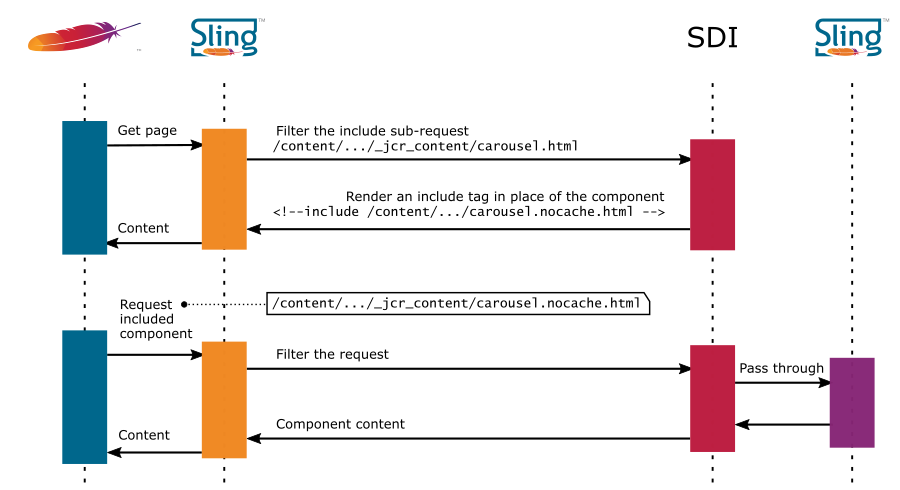

Apache Sling Dynamic Include
Introduction
This module introduces a Servlet Filter that replaces dynamic components (eg. current time or foreign exchange rates) with server-side include tags (eg. SSI or ESI). Thanks to this approach, the whole page can be cached by the Dispatcher or a Content Delivery Network while dynamic components are generated and included with every request. Components to include in this manner are specified by resourceType in the filter's configuration.
When the filter intercepts a request for a component with a matching resourceType, it'll return a server-side include tag (eg. <!--#include virtual="/path/to/resource" --> when the Apache HTTP server with mod_include is used). However, an additional selector (nocache by default) is inserted into the path. This serves as a marker for the filter, instructing it to return actual content.
Components don't have to be modified in order to use this module (or even be aware of its existence). It's a Servlet Filter, installed as an OSGi bundle and it can be enabled, disabled or reconfigured at runtime.
Prerequisites
- AEM / Apache Sling 2+
- Maven 2.x, 3.x
Installation
Add following dependency to your project:
<dependency>
<groupId>org.apache.sling</groupId>
<artifactId>org.apache.sling.dynamic-include</artifactId>
<version>3.1.2</version>
</dependency>
Configuration
The filter is delivered as a standard OSGi bundle. SDI is configured via a configuration factory called SDI Configuration. The following properties are available:
- Enabled - enable SDI
- Base path - This SDI configuration will work only for paths matching this value. If the value starts with a
^character, regular expression matching (Available since 3.1.0) will be performed. Otherwise it will try to match the value as a path prefix. - Resource types - specifies which components should be replaced with tags
- Include type - type of the include tag (SSI, ESI or JavaScript)
- Add comment - adds a debug comment:
<!-- SDI include (path: %s, resourceType: %s) -->to every component replaced - Filter selector - the selector used in the request to get actual content
- Component TTL - time to live in seconds, set for rendered component (requires Dispatcher 4.1.11+ or another caching proxy that respects the
max-agedirective of theCache-ControlHTTP header) - Required header - SDI will be enabled only if the configured header is present in the request. By default it's
Server-Agent=Communique-Dispatcherheader, added by the AEM Dispatcher. You may enter just the header name only or the name and the value split with=. - Ignore URL params - SDI normally skips all requests containing any GET parameters. This option allows to set a list of parameters that should be ignored in the test. See the Ignoring URL parameters section in the dispatcher documentation.
- Include path rewriting - enable rewriting link (according to Sling mapping) that is used for dynamic content inclusion.
Compatibility with components
The filter is incompatible with the following types of component:
- components which handle POST requests or GET parameters (query strings),
- synthetic components which use suffixes (because suffix is used to pass
requestTypeof the synthetic resource).
If a component does not generate HTML but JSON, binary data or any format that doesn't allow XML-style comments, make sure to turn off the Comment option in configuration.
Enabling SSI in Apache with the AEM Dispatcher Module
One of the most common stacks where SDI proves useful is when the Apache HTTP server is set up as a caching proxy in front of Adobe Experience Manager (a Sling-based content management system). A dedicated module called the Dispatcher is used to serve as the caching layer.
If you're working with a Sling-based application other than AEM, the mod_proxy configuration remains relevant. The Dispatcher is specific to AEM but even if you're using a different caching layer, the changes you will need to make should be similar in principle to the ones outlined below.
This section describes the minimal configuration necessary to use Sling Dynamic Include in this manner. You will need:
- Apache HTTP server with
mod_include(to process Server Side Includes) and the Dispatcher module (to handle caching) - Adobe Experience Manager as a Sling installation to serve your content
- SDI installed on the AEM Publish instance
Start by installing Apache and the Dispatcher
Then, enable mod_include (on Debian: a2enmod include) on Apache. This will allow the Server-Side Include tags rendered by SDI to be processed.
After that, find the following lines in the dispatcher.conf file:
<IfModule dispatcher_module>
SetHandler dispatcher-handler
</IfModule>
and modify it as shown below:
<IfModule dispatcher_module>
SetHandler dispatcher-handler
</IfModule>
SetOutputFilter INCLUDES
Having added the SetOutputFilter directive, open the virtual host's configuration and add the Includes option to the Options directive:
<Directory />
Options FollowSymLinks Includes
AllowOverride None
</Directory>
<Directory /var/www/>
Options Indexes FollowSymLinks MultiViews Includes
AllowOverride None
Order allow,deny
allow from all
</Directory>
It's also a good idea to disable caching for .nocache.html files in dispatcher.any config file. Just add:
/disable-nocache
{
/glob "*.nocache.html*"
/type "deny"
}
at the end of the /rules section. This way, dynamic components will not be cached by the Dispatcher. This step may not be necessary if you're using SDI to optimize the caching of static components.
Enabling TTL in dispatcher 4.1.11+
In order to enable TTL on Apache with the Dispatcher just add:
/enableTTL "1"
to your Dispatcher configuration.
Enabling ESI in Varnish
Edge Side Includes can be used as an alternative to SSI. ESI tags can be processed by Varnish which can be installed locally and often made available as part of Content Delivery Networks.
In order to configure Varnish to work with SDI, add following lines at the beginning of the vcl_fetch section in your /etc/varnish/default.vcl file:
if(req.url ~ "\.nocache.html") {
set beresp.ttl = 0s;
} else if (req.url ~ "\.html") {
set beresp.do_esi = true;
}
It'll enable ESI includes in .html files and disable caching of the .nocache.html files.
JavaScript Include
The Dynamic Include Filter can also replace dynamic components with script tags using AJAX so that they are loaded by the browser. It's called JSI. In the current version of SDI, the jQuery library is used. More attention is required if the included component renders some JavaScript code. For example, the Geometrixx Carousel component won't work because its initialization is done in page's <head> section while the component itself is still not loaded.
Plain and synthetic resources
Resources in Apache Sling can be backed by JCR nodes but that's not always the case. In this section, we will look at the different ways SDI handles JCR-based resources
Let's start with an example of a JCR-based component available at some URL, e.g.
/content/geometrixx/en/jcr:content/carousel.html
In this case, the component is replaced with an include tag, and the nocache selector (or its equivalent as per the configuration) is added to the selector string
<!--#include virtual="/content/geometrixx/en/jcr:content/carousel.nocache.html" -->
If the filter gets a request with the selector it'll pass it further (using doChain) without taking any action.

In contrast to the above example, some components are based on so-called synthetic resources. Synthetic resources have a resourceType and a path but they're not backed by a node in the JCR.
One such example is the
/content/geometrixx/en/jcr:content/userinfo
component with foundation/components/userinfo as the resource type. These components return an HTTP 404 response if one makes them a target of an HTTP request. SDI recognizes these components and builds a different include URL for them in which the resource type is added as a suffix, e.g.:
/content/geometrixx/en/jcr:content/userinfo.nocache.html/foundation/components/userinfo
When the filter intercepts such a request, it'll try to emulate the behaviour of a <sling:include> JSP tag and include the resource with the given type and a nocache selector:
/content/geometrixx/en/jcr:content/userinfo.nocache.html
The selector is necessary because without it the filter would replace the component with an SSI tag again, resulting in an infinite loop leading to an SSI/ESI processing error.
External resources
- SDI presentation on adaptTo() 2012
- SDI blog post on the Cognifide website
- See the Apache Sling website for the Sling reference documentation. Apache Sling, Apache and Sling are trademarks of the Apache Software Foundation.
Release notes
3.1.2
- Introduced readable names for SDI configuration entries in the OSGi console (SLING-7695)
- Fixed a bug where the selector configured for use with SDI was added multiple times to the same selector string (SLING-7742)
- Introduced a mechanism that allows synthetic resources included via SDI to be cached by the AEM Dispatcher (SLING-7785)
3.1.0
- Regular expression matching can be used when configuring resource paths (SLING-7621)
3.0.0
Sling Dynamic Include donated to the Apache Sling project (SLING-5594), repackaged and released (SLING-6301)
2.2.0
- Support for time-based (TTL) caching, Dispatcher 4.1.11+ required